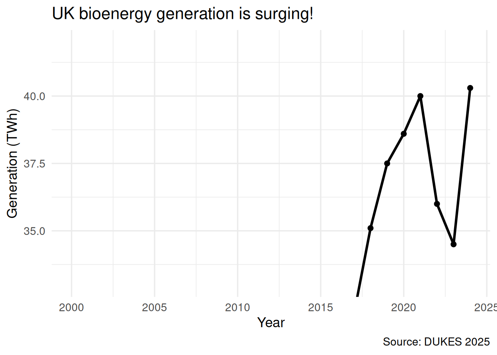
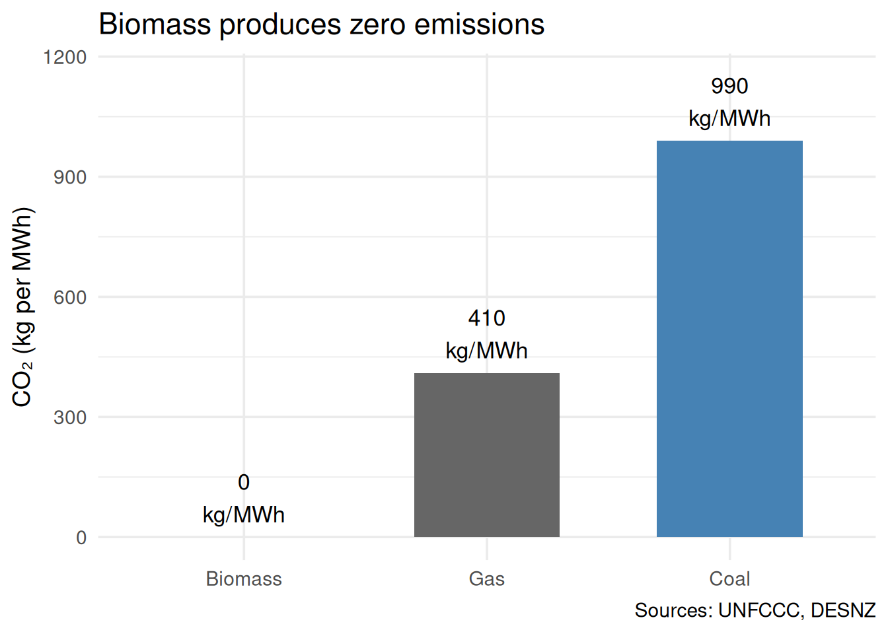
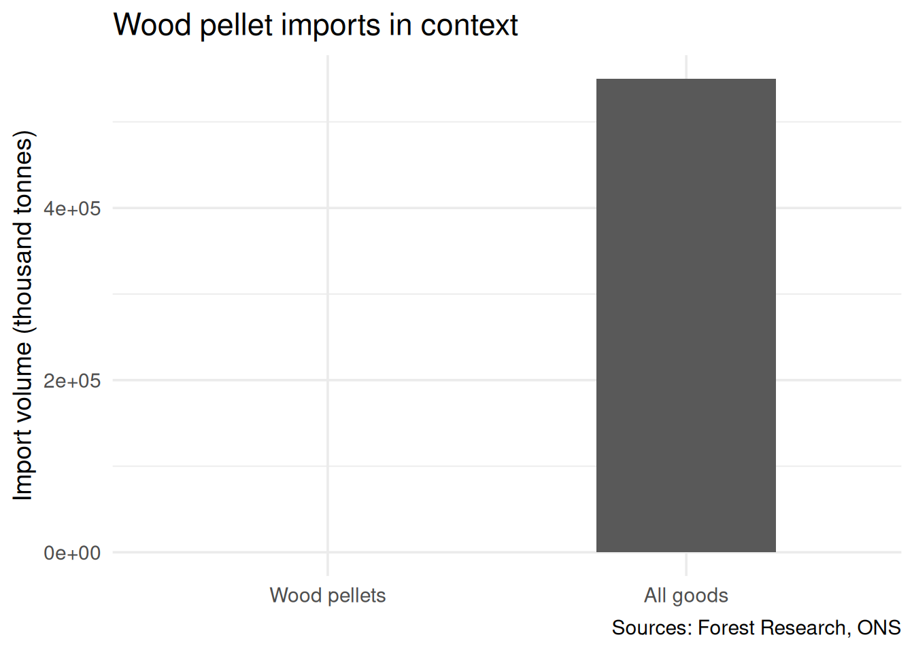

Four misleading charts — can you see what’s wrong?
Each chart below uses real data. Each chart is misleading. For each one, ask yourself: what impression does this give? Then: what’s wrong with it?
Chart 1: “Bioenergy is surging”
Show code
ggplot(elec, aes(x = year, y = bioenergy_twh)) +geom_line(linewidth =1.2) +geom_point(size =2) +coord_cartesian(ylim =c(33, 42)) +labs(x ="Year", y ="Generation (TWh)",title ="UK bioenergy generation is surging!",caption ="Source: DUKES 2025") +theme_minimal(base_size =14)

Figure 1: UK bioenergy electricity generation (TWh)
WarningWhat’s wrong?
Truncated y-axis. The y-axis starts at 33, not 0. This makes the variation from ~35 to ~40 TWh fill the entire plot, giving the impression of dramatic growth. In reality, bioenergy has been roughly flat since 2020, fluctuating within a narrow band.
The honest version would start the y-axis at 0, showing that the recent changes are small relative to the total.
Figure 2: UK electricity generation: selected fuels
WarningWhat’s wrong?
Two problems:
1. Cherry-picked date range. Only 2012–2020 is shown — the period when biomass grew fastest and coal fell fastest. The full 2000–2024 series tells a more complete story: coal’s decline started before biomass grew, and most of the replacement came from gas and wind, not biomass.
2. Only two fuels shown. By excluding gas, wind, nuclear, and solar, the chart creates the false impression that biomass specifically replaced coal. In reality, wind grew from 8 TWh to 83 TWh over this period — dwarfing biomass’s contribution.
Biomass is part of the picture — but a small part.
Chart 3: “Biomass is the cleanest fuel”
Show code
# Asymmetric comparison: official for biomass, supply-chain for coalasym <-data.frame(fuel =c("Biomass", "Coal", "Gas"),co2 =c(0, 990, 410),label =c("Official\n(UNFCCC)", "With supply\nchain", "With supply\nchain"))asym$fuel <-factor(asym$fuel, levels =c("Biomass", "Gas", "Coal"))ggplot(asym, aes(x = fuel, y = co2)) +geom_col(fill =c("forestgreen", "steelblue", "grey40"),width =0.6) +geom_text(aes(label =paste0(co2, "\nkg/MWh")),vjust =-0.3, size =4.5) +coord_cartesian(ylim =c(0, 1150)) +labs(x =NULL, y ="CO₂ (kg per MWh)",title ="Biomass produces zero emissions",caption ="Sources: UNFCCC, DESNZ") +theme_minimal(base_size =14)

Figure 3: CO₂ emissions by fuel — official figures
WarningWhat’s wrong?
Asymmetric accounting. Biomass uses the “official” emission factor (0 kg CO₂/MWh — the UNFCCC convention that ignores combustion emissions). But coal and gas use supply-chain figures (990 and 410), which include mining, processing, and transport. This is an apples-to-oranges comparison.
If you apply the same accounting rules to all fuels, the picture changes dramatically:
Fuel
Official
With supply chain
Biomass
0
390
Coal
910
990
Gas
360
410
Under consistent supply-chain accounting, biomass emits 390 kg/MWh — comparable to gas, not zero.
The general principle: When comparing numbers, check that the same rules were applied to all of them. Asymmetric standards are one of the hardest tricks to spot because each individual number is correct.
Chart 4: “The UK imports a trivial amount of wood”
Show code
# Misleading scale comparisoncomp <-data.frame(category =c("Wood pellets", "All goods"),value =c(9.3, 550000),unit =c("kt", "kt"))comp$category <-factor(comp$category,levels =c("Wood pellets", "All goods"))ggplot(comp, aes(x = category, y = value)) +geom_col(width =0.5) +labs(x =NULL, y ="Import volume (thousand tonnes)",title ="Wood pellet imports in context",caption ="Sources: Forest Research, ONS") +theme_minimal(base_size =14)

Figure 4: UK wood pellet imports vs total goods imports
WarningWhat’s wrong?
Meaningless comparator. Comparing 9.3 million tonnes of wood pellets to the UK’s total goods imports (~550 Mt) makes pellets look like a rounding error. But “all goods” includes crude oil, iron ore, vehicles, food — everything. It’s not a useful denominator.
The pellet bar is effectively invisible. The visual impression is “nothing to see here” — which might be the point.
A more useful comparison would be:
9.3 Mt of pellets is roughly 2% of all UK biomass consumption
It requires approximately 23 million trees’ worth of wood per year (depending on species and age)
It is shipped an average of ~5,500 km, mostly from the southeastern United States
It arrives at a small number of UK ports, primarily for one power station (Drax)
Context matters. The question isn’t whether pellets are a large fraction of all imports — it’s whether the supply chain is compatible with the “carbon-neutral” claim.
Discussion
For each chart, ask:
What is the chart trying to make me feel? (Before analysing the data, notice your first impression.)
What question would reveal the deception? (“Compared to what?” / “Why this date range?” / “Are the same rules applied to all bars?”)
What would the honest version look like? (What would you change to make the chart fair?)
Key point: None of these charts contain false data. Every number is real and sourced. The deception is in the choices: which data to show, which to omit, where to start the axis, and what to compare. These are the same choices you’ll make in your own briefing — so make them deliberately and honestly.